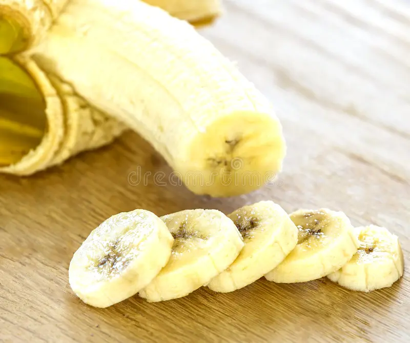

Pinapples are one of my favorites fruits, I enjoy cutting them myself and dicing them into little slices to enjoy. pinapples are in the juicy fruit family, it has this sweet yet-somewhat-sour taste that makes them really enjoyable to eat. However pinapples contains acids that if you were to eat too much of it in one setting it leaves your tounge and gums stinging for several days as result, I know from experience, its not pleasent. Though, on a more positive note, pinapples are ric in vitamin C, which can help strengthen your immune system, they also help with digestion, and are low-in calories and high in fiber making them a sweet and healthy snack to enjoy.

Cantaloupes are another one of my favorite fruits, much like pinapples I enjoy cutting them myself and letting it ripen until its just ripe enough to eat properly. However, something I often struggle with cantaloupes is knowing when they are fully ripe enough so I can enjoy it at its best. Much like pinapples, cantaloupes are in the juicy-fruit family, they have this soft-yet mildly sweet flavour that makes enjoying them a treat, especially when its fully ripened. Cantaloupes contains vitamin A, strengthening your eye-sight and your immune system, supports digestion, rich in potassium, and are low in calories. Cantaloupes are a great fruit for eating healthy, as well as being sweet enough for a light snack.
Bananas, one of the worlds super-fruits are also one of favorite fruits to eat I enjoy them by themselves and especially as banana pudding being one of my favorite desserts. Bananas are rich in carbohydrates, containing vitamin B and C, potassiun, electrolytes, immune system support, supporting your digestive system, and balancing your blood sugar. Bananas are one my favorite snacks to enjoy being one that you can grab-and-go without the process of cutting, bananas are a great snack to that is sweet and convenient to enjoy.
